Flensburg city centre, near the inner harbour (coordinates ~150 m from the 07-20 harbor cluster) · 54.7927° N, 9.4336° E · 11:12 AM–7:20 PM · 5 photos
UnconfirmedPhotos span a full day (11:12 to 16:09) at essentially one spot: a hotel-style automatic shoe-shine machine in the morning, a half-timbered building facade, and a Flensburger Radler beer photographed on a wooden pier bench in the afternoon. This is almost certainly the day's lodging (or a spot immediately next to it), returned to repeatedly, but no signage confirms a specific hotel name.
These frames aren't a single sightseeing stop so much as the day's anchor point -- a lodging near the harbour visited in the morning (the shoe-shine machine, a small but unmistakable giveaway of hotel-lobby life, humming away for an audience of none) and again in the afternoon after a loop through the old town and museum, this time with a bottle of Flensburger Radler firmly in hand as evidence of a job well done. The half-timbered and brick facades in the background are typical of Flensburg's harbourside quarter, where former merchant houses and warehouses (Speicher) built for the rum and grain trade have been converted, piecemeal and without much fuss, into hotels, apartments and shops over the last century.
Flensburg's Altstadt largely escaped the heavy bombing that levelled other German ports in the Second World War, which is why so much of this waterfront -- the mix of gabled brick townhouses and half-timbering glimpsed here -- reads as genuinely old rather than a careful reconstruction pretending otherwise. It makes for an easy base: flat, walkable, and a few minutes from both the harbour promenade and the old town's shopping streets, which is more than can be said for the shoe-shine machine's aim.
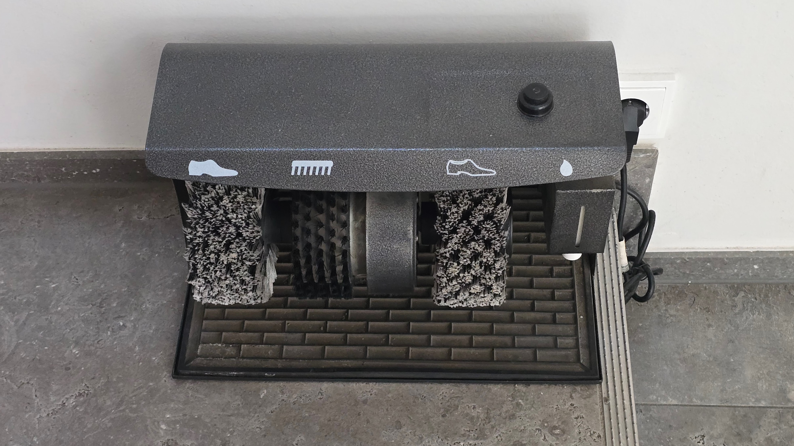
11:12 AM
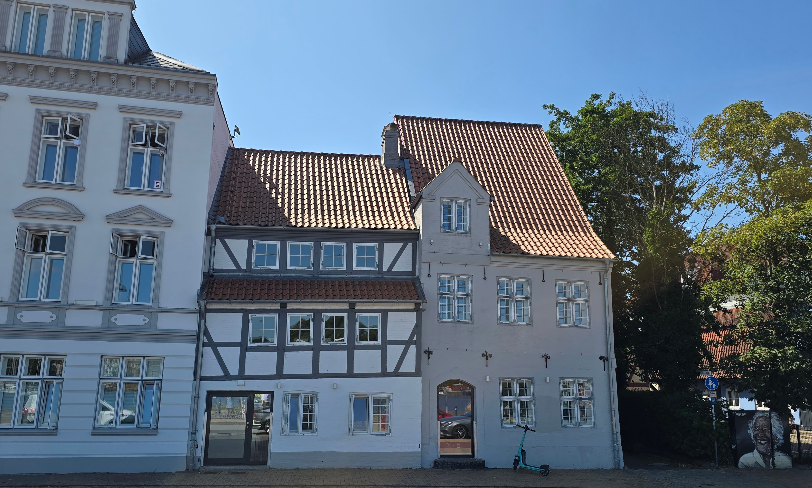
3:25 PM
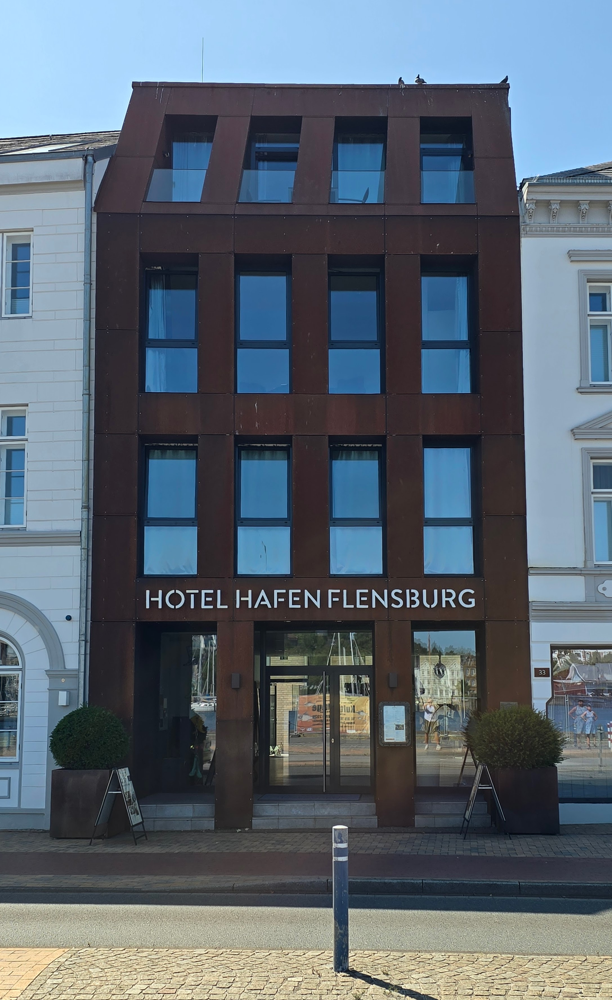
3:25 PM
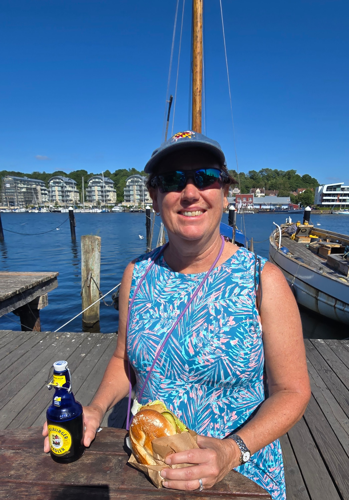
4:09 PM
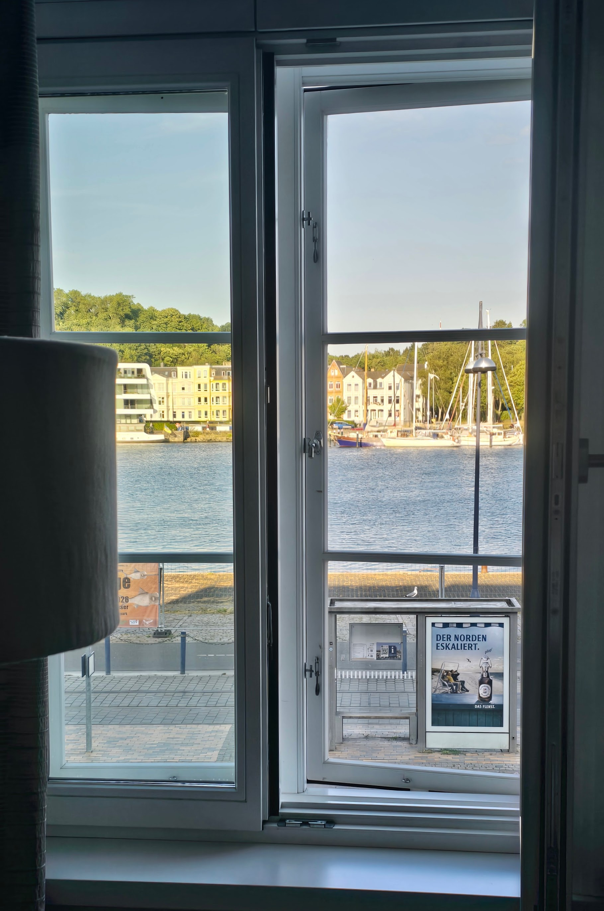
7:20 PM
2
Flensburg Altstadt — old town shopping street
Flensburg old town, pedestrian merchant quarter (likely Holm or Große Straße) · 54.7881° N, 9.4323° E · 11:33 AM · 1 photo
UnconfirmedThe storefront's sign identifies it as carrying 'Studio am Meer,' a coastal-lifestyle brand (dog leads, tote bags) based in Tating on the North Frisian coast; this appears to be an independent boutique in Flensburg's Altstadt selling that brand and other beach-house-style goods, rather than a Studio am Meer flagship. The exact street/building was not confirmed, though the storefront style and cobblestone lane match Flensburg's historic pedestrian shopping core.
A quick browse through Flensburg's old town shopping quarter, where narrow lanes once lined with the merchant houses of the town's 18th-century rum-trading heyday now hold boutiques, galleries and cafés in place of counting-houses full of ledgers and rum fumes. The playful signage here -- 'Welcome bitches, let's drink wine and judge everyone' -- is a world away from the maritime seriousness the district's architecture otherwise projects, but that particular collision of old brick and new irreverence is fairly typical of how these harbour-town centres have repurposed themselves for tourism and local life alike.
Flensburg's Altstadt is compact enough to cover on foot in a single afternoon, and its street plan -- narrow, curving lanes running back from the harbour -- still traces the medieval merchant town rather than any later, more regimented redevelopment that a committee might have preferred.
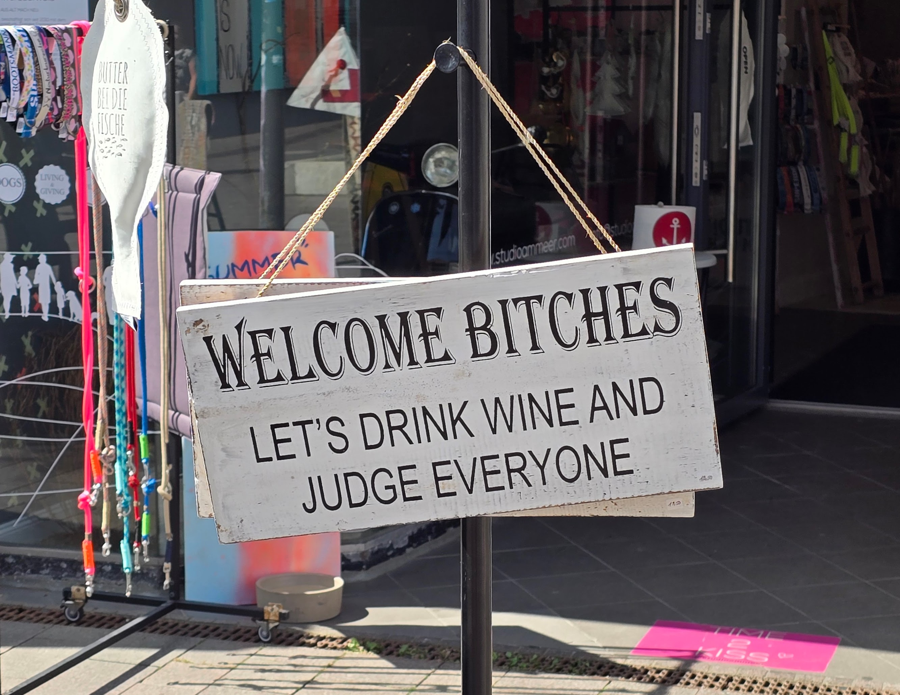
11:33 AM
3
St. Nikolai & Flensburg's rum quarter
Flensburg Altstadt, in and around St. Nikolai Kirche · 54.7827° N, 9.4363° E · 12:15 PM–12:17 PM · 2 photos
NoteThe church tower — a tall neo-Gothic spire flanked by four corner pinnacles, with clock faces on each face — matches St. Nikolai, rebuilt in 1878 to designs by Johannes Otzen after an 1877 fire. A gallery sign reading 'Galerie Kruse' pinpoints an antiques/art dealer on one of the old town's historic house-fronts. A later photo shows an old 'Bommerlunder' aquavit bottle amid barrels and dim brick surroundings, consistent with one of Flensburg's historic rum cellars or tasting houses, though the specific venue could not be confirmed.
St. Nikolai's spire has watched over Flensburg's old town for less than 150 years in its current form -- lightning brought down the previous tower in 1877, an outcome one imagines the church took rather personally -- but the church's roots go back to the 1500s, and its carillon, installed in 1909, still marks the hours from 60 metres up without complaint. Around its base, the old town's narrow lanes hold antique dealers and galleries like the one glimpsed here, trading in the accumulated furnishings of a city that spent two centuries growing rich on Caribbean trade and evidently kept every last teaspoon.
That trade is precisely why a bottle of Bommerlunder shows up in the same half hour as the church. Flensburg became Germany's unofficial 'rum capital' in the 18th and 19th centuries: ships brought raw sugarcane spirit back from the Danish and other Caribbean colonies, and Flensburg's merchants, conveniently shielded from steep import duties that applied to finished rum, blended, aged and bottled it locally instead, a loophole exploited with real dedication. Bommerlunder itself, a caraway-and-grain aquavit rather than a true rum (a distinction the label is at pains to make), traces its recipe to 1760 and a Danish tavern near the border; the Dethleffsen distillery that made it famous was one of dozens of Flensburg spirits houses built on that same rum-trade infrastructure of cellars, barrels and blending rooms -- very likely the kind of space this photo was taken in, even if the exact address wasn't confirmable.
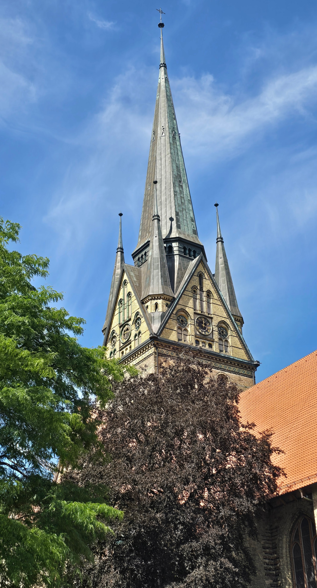
12:15 PM
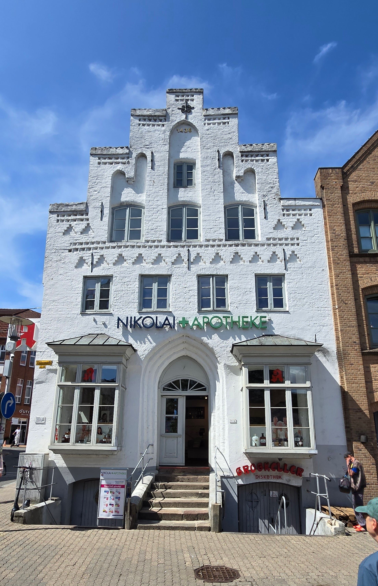
12:17 PM
4
Museumsberg Flensburg
Museumsberg Flensburg, Lutherplatz, above the Stadttheater · 54.7814° N, 9.4352° E · 12:42 PM–1:56 PM · 16 photos
NoteThe cluster's centroid (54.7855N, 9.4320E) sits almost exactly on the documented coordinates of Museumsberg Flensburg (54.7857N, 9.4316E). The ornate brick facade with a carved sundial, sun-face relief and a '1904' date matches the Heinrich-Sauermann-Haus, inaugurated in 1903 in Dutch Renaissance style; the 16th-century crucifixion altarpiece and the mounted drinking horn are consistent with the museum's regional cultural-history and decorative-arts collections.
Museumsberg Flensburg began in 1876 when the cabinetmaker and woodcarver Heinrich Sauermann sold his private collection of decorative antiques to the city, seeding what became one of Schleswig-Holstein's largest museums out of what was essentially one enthusiast's very large hobby. The ornate building glimpsed here -- with its carved sundial, sun-mask relief and swan motifs -- is the 1903 Heinrich-Sauermann-Haus, built in a Dutch Renaissance style to house both his collection and the applied-arts school he founded, whose students briefly included a young Emil Nolde, presumably before he became too famous to take attendance.
Inside, the collection ranges from a 1517 Marienaltar and Gothic Madonna sculpture down to the kind of 16th-century crucifixion altarpiece and mounted drinking horn seen in these frames -- artifacts of the old Duchy of Schleswig's church and civic life, none of them the least bit apologetic about their age. A second building next door, the neo-Gothic former Goethe-Schule, was converted in 1997 into the Hans-Christiansen-Haus, dedicated to Flensburg's most famous Jugendstil painter and to the city's own Expressionist holdings; together the two buildings, set in a park above the old cemetery, cover seven centuries of the region's art and material culture in one remarkably efficient hilltop visit.
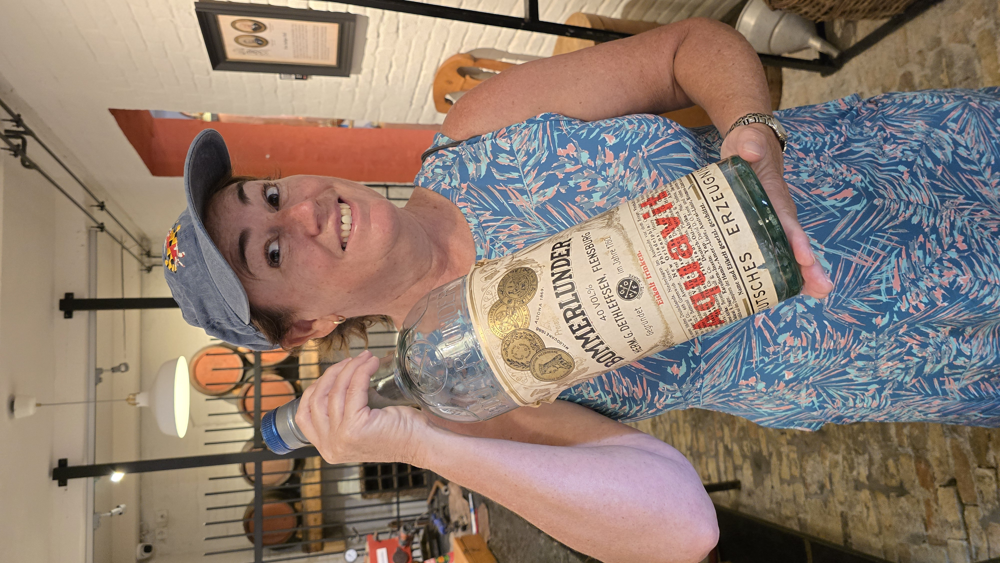
12:42 PM
Museumsberg Flensburg — collection & courtyard
NoteThe red 'museumsberg flensburg' entrance banner and a temporary 'Grundwasser lebt!' exhibition banner confirm this is still Museumsberg's grounds (the same site as cluster 3's Heinrich-Sauermann-Haus, about 35m away). A small jeweled gold crown photographed in a display case belongs to the museum's decorative-arts collection; the specific piece/acquisition wasn't independently confirmed. One photo also shows a large 16th-century allegorical oil painting whose canvas itself is legibly signed and dated -- 'NICOLAVS ANDREÆ FLENSBVRGENSIS' -- with a Latin motto (LIBERTAS VERA EST AFFECTIBVS NON SERVIRE) and German verse inscribed along the bottom edge; identified directly from the inscriptions visible in the photo itself, not from an external catalog, so the painting's formal title, exact date, and gallery placement weren't independently verified beyond what it states about itself.
A second pass through Museumsberg's grounds — this time the entrance itself, marked by a red 'museumsberg flensburg' banner and, beside it, a temporary exhibition banner for 'Grundwasser lebt!' ('Groundwater Lives!'), a science and local-history show running alongside the permanent collection. The museum's two buildings host a rotating slate of temporary exhibitions in addition to the Sauermann and Christiansen collections upstairs, so what's advertised outside changes from one visit to the next.
Inside, a small gold crown set with cabochon rubies, sapphires and an emerald catches the light in one display case, and nearby hangs a large 16th-century allegorical painting that names its own maker in paint: 'Nicolaus Andreae Flensburgensis,' a Flensburg-born artist working around the 1590s. It sets a bare-shouldered figure of Superbia (Pride), attended by a peacock, against a defeated warrior in Ottoman dress labelled 'Sultan Mehemet Imperator Turcarum,' under the Latin motto LIBERTAS VERA EST AFFECTIBUS NON SERVIRE -- 'true freedom is not to be enslaved by one's own passions' -- with a German verse translation inscribed below it. It's the kind of moralizing, emblem-book-style allegory Renaissance collectors commissioned often, made locally notable here mainly by its maker's own signed claim on Flensburg; alongside the crown, the altarpieces and the drinking horn from the previous stop, it rounds out Museumsberg's holdings in the decorative and religious art of the old Duchy of Schleswig.
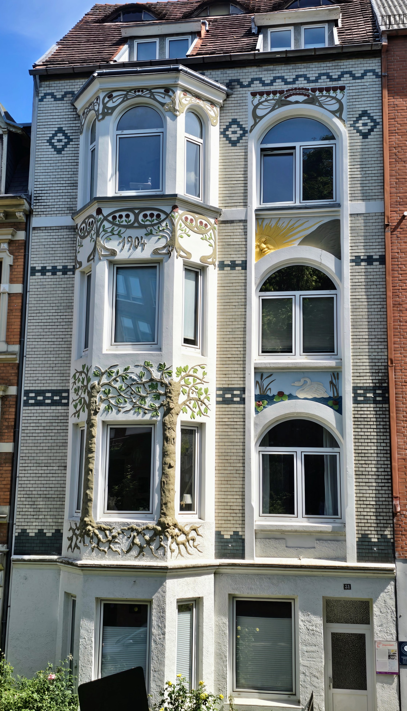
12:59 PM
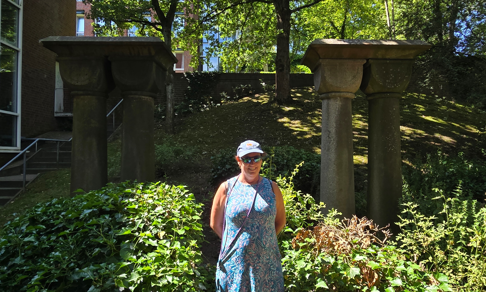
1:04 PM
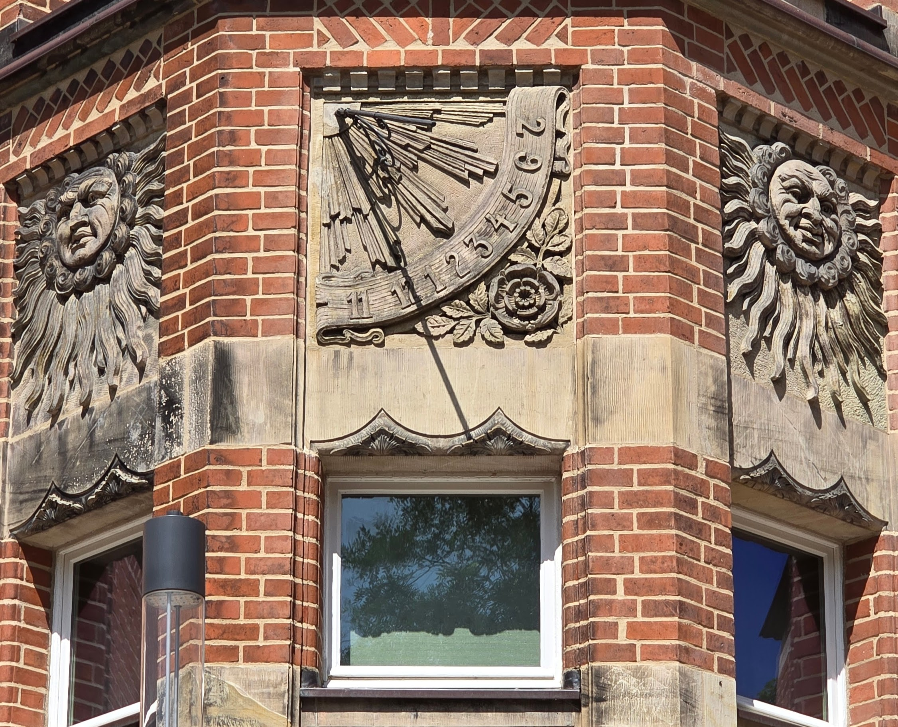
1:08 PM
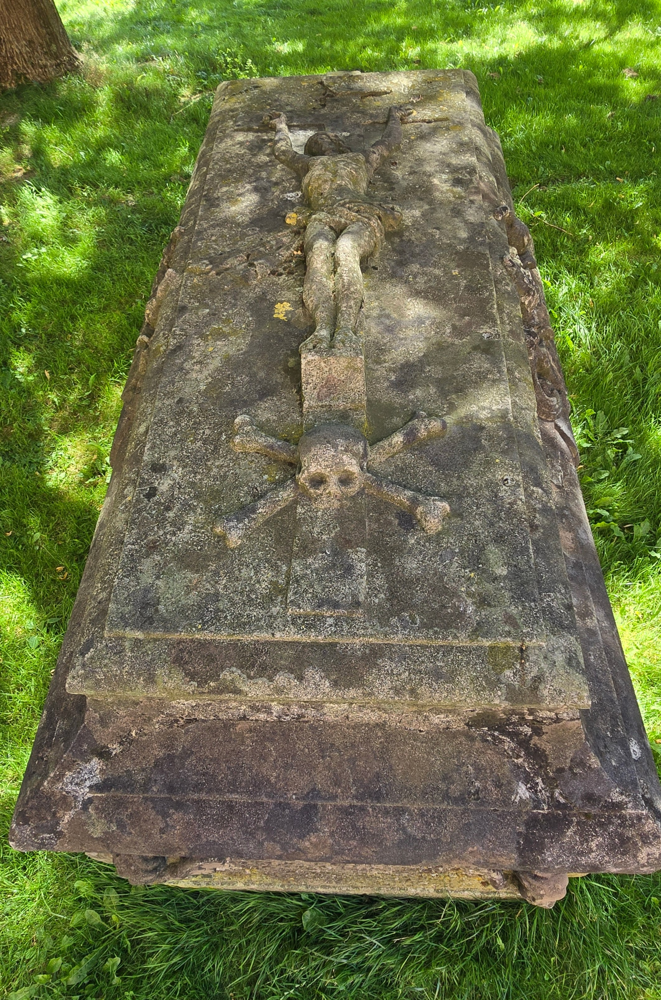
1:09 PM
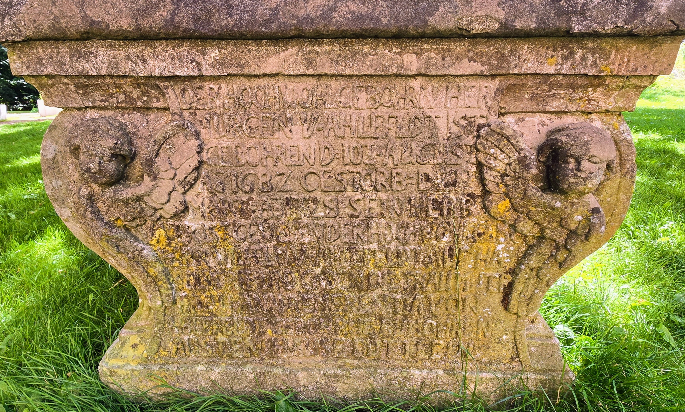
1:09 PM1:10 PM
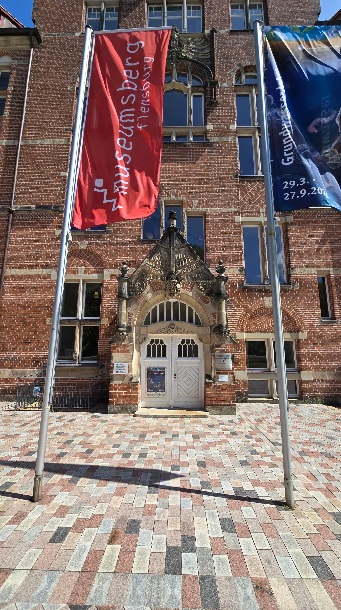
1:12 PM
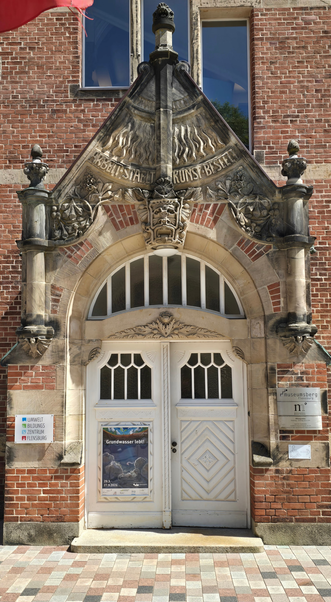
1:12 PM
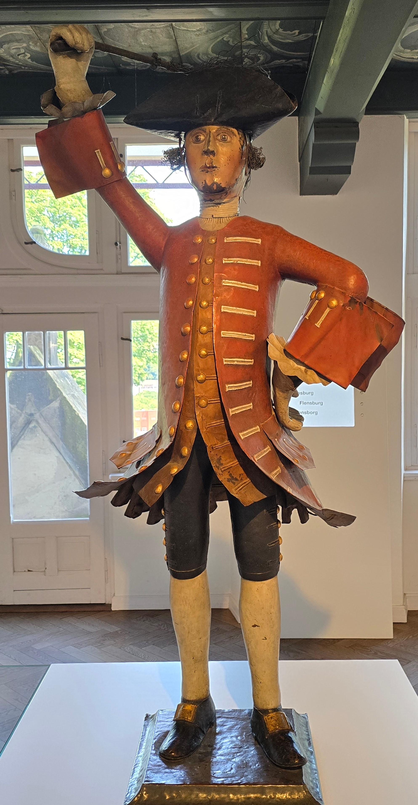
1:18 PM
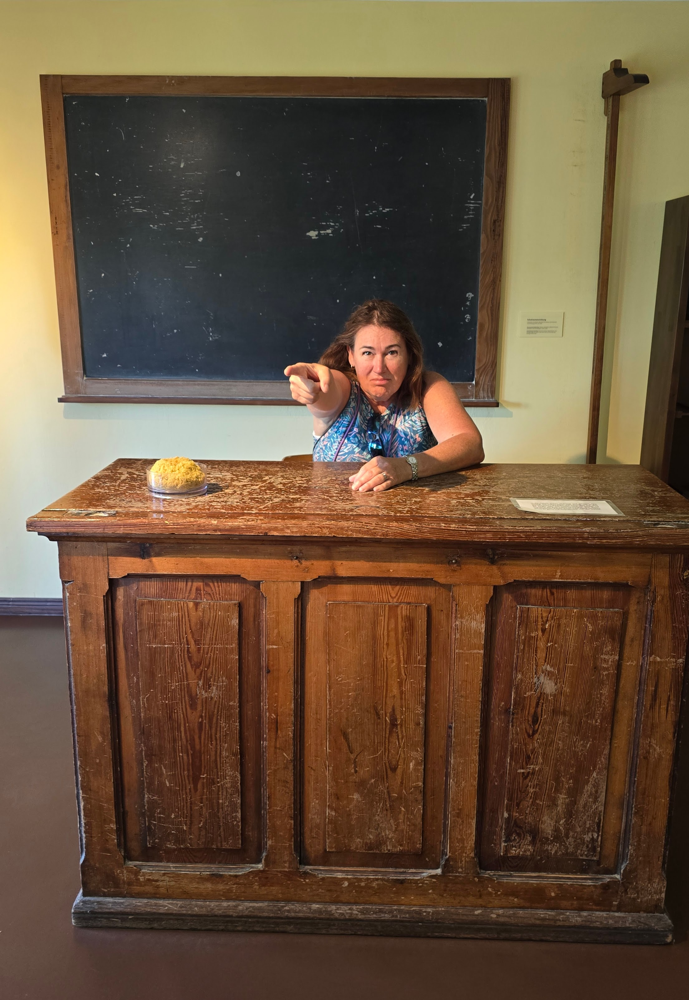
1:36 PM
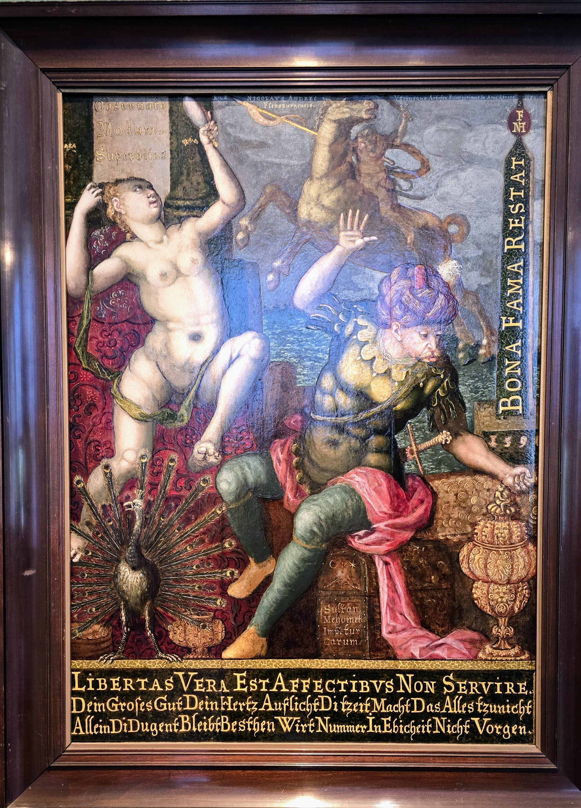
1:47 PM
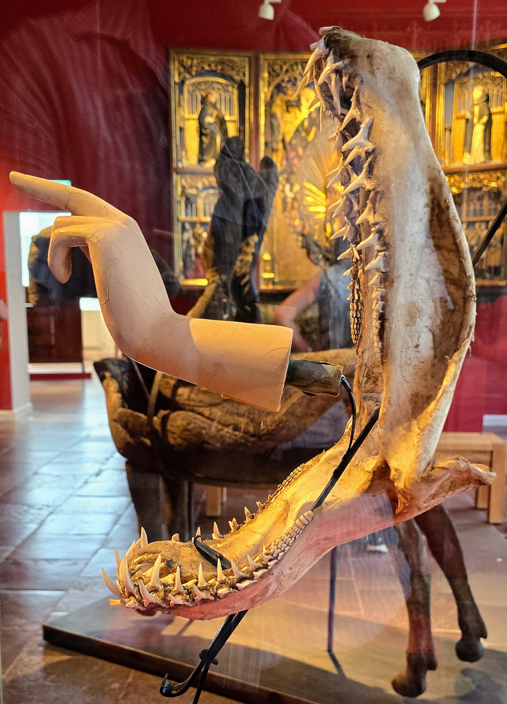
1:51 PM
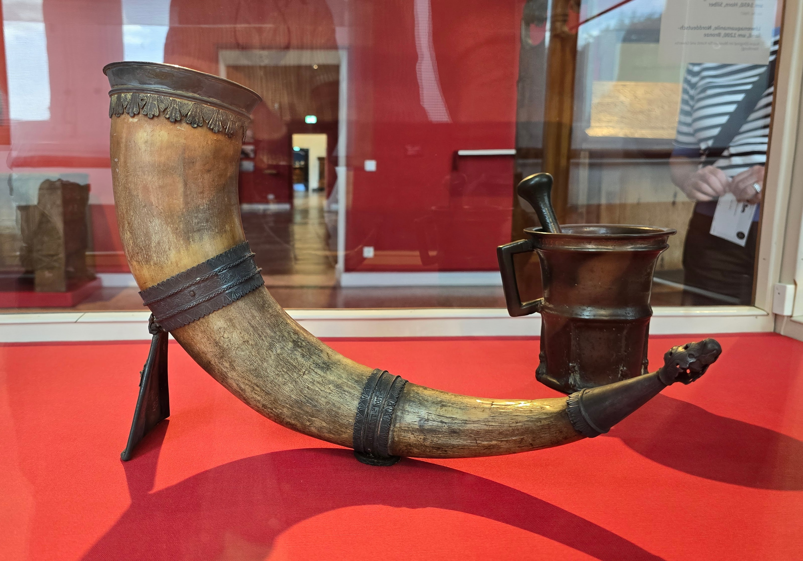
1:54 PM
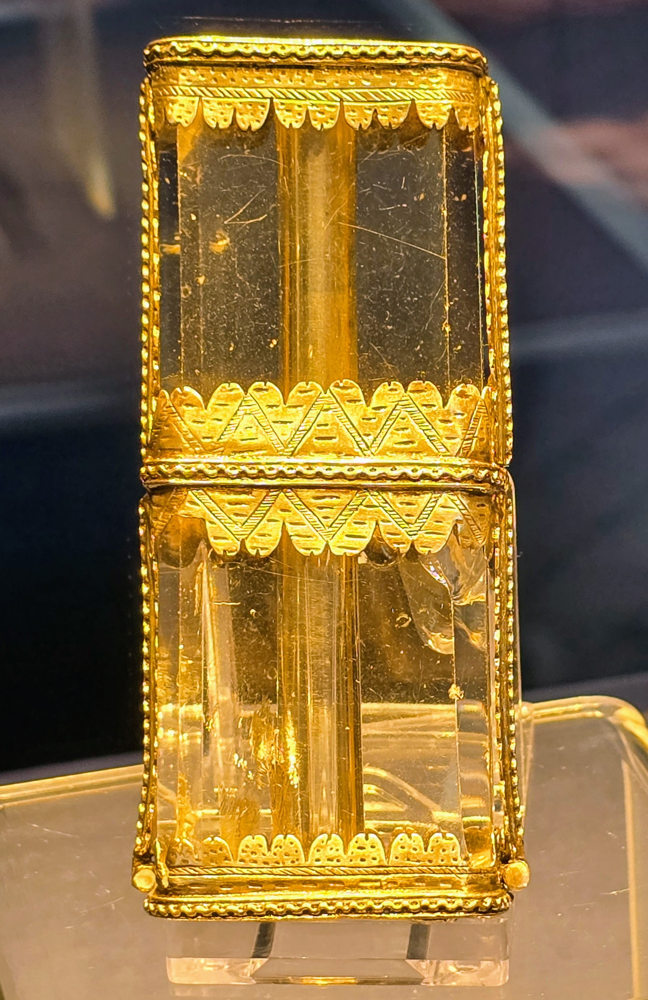
1:55 PM
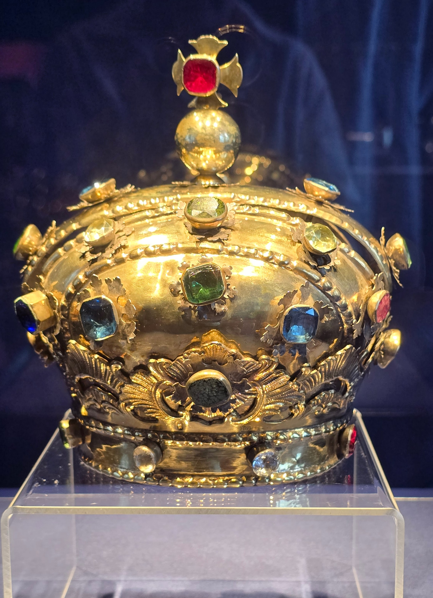
1:56 PM
Off the Map
These 4 frames carried no GPS data in
their EXIF (common for messaging-app re-saves, screenshots, or some camera apps) and weren’t placed on the
map above. Add coordinates manually if you’d like them included.